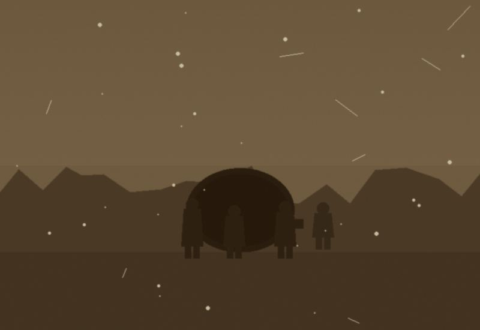

a memorial archive for the august 1962 expedition
In the summer of 1962 a small team of amateur cavers from Sheffield descended into a newly-surveyed shaft on Kettlewell Ridge in the Yorkshire Dales. They planned to be underground for four days. On the morning of the fifth day only one man, Dr. Alistair Vance, walked out.
He did not speak for three months. When he finally did speak he said a single sentence in a language nobody recognised, and then he did not speak again. He died in a private asylum outside Harrogate in 1971.
The other three members of the team were never recovered.
This site is a small memorial. It preserves what remains of the team's own materials: the journal entries from the surface camp, the film Peter Harrow shot underground before the recording stopped, the field recordings from the first two chambers, and Elena Kade's notebook of linguistic sketches.
The site was first put online in the summer of 1971 and has been maintained by the same webmaster since. Contributions from anyone who knew the team are always welcome. Please sign the guestbook if you knew any of them.
